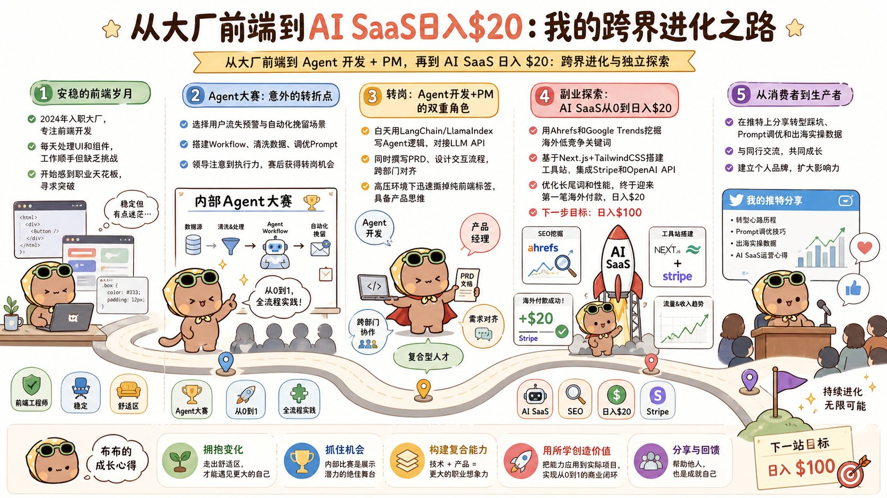

2024 年入职大厂后，我一直在公司安心做前端。每天切页面、画 UI、调组件，业务稳定，加班不多，日子过得踏实且顺手。当时没想太多，觉得按照这个节奏按部就班走下去挺好。
直到我参加了一次公司内部的 Agent 大赛——这次经历不仅让领导看到了我的复合潜力，直接把我推进了 Agent 核心开发兼 PM 的新角色，也顺势开启了我探索 AI SaaS 副业的独立开发之路。
如果你也正处于前端/技术的转型期，或者对 AI 落地和独立开发感兴趣，这篇 3 分钟的真实经历与实操细节，或许能给你带来一些启发。
一、 一场全栈比赛，意外解锁职业新角色
那场内部 Agent 大赛，过程其实挺真实的。
很多组直接拿公司成熟的线上业务来参加比赛，场景成熟、数据现成，做出来的效果非常拔尖。而我自己选了个“用户流失预警与自动化挽留”的小场景，从 0 开始搭建 、清洗行为数据、调优 Prompt 提示词。虽然方向我觉得没问题，但因为数据积累和场景复杂度不够，最终名次平平。
但幸运的是，这次从 0 到 1 的全流程实践，让领导关注到了我的执行力和对 Agent 架构的理解。
比赛结束后不久，领导找我谈话，给了我一个新的挑战：直接转岗负责业务线的 Agent 核心功能开发，同时兼任产品经理（PM）。
从纯粹的“前端执行者”转型为“Agent 开发 + 产品负责人”，挑战比预想的要大得多：
角色跨度大：白天既要写 Agent 逻辑、对接 LLM API，又要撰写 PRD、设计交互流程，还要跨部门跟算法、后端、运营开会对齐。
节奏瞬间拉满：以前只需要对 UI 负责，现在要对整个产品的交付和结果负责。白天推需求、写代码，晚上写文档、复盘数据。
虽然刚开始节奏紧得有点喘不上气，但这种高压环境下的“高密度锻炼”，让我迅速撕掉了纯前端的标签，具备了看全盘业务的产品思维。
二、 拥抱变化：主动构建复合型“外挂”
这次转岗让我对技术人的职业路径有了更深的理解：AI 时代的大厂变化越来越快，单纯做某一环的“螺丝钉”边际效应在递减。真正的安全感，来自于打造自己的复合型能力和多元管道。
既然在公司每天都在接触 Agent 落地和产品逻辑，何不把这套“技术 + 产品”的组合拳用在个人项目上？
工作之余，我决定开始探索一条自己的副业管道——不只是为了增加一份收入，更是为了验证自己能否独立完成从“想法”到“商业变现”的全闭环。
三、 跟着大佬做 AI SaaS：从 0 到日入 $20 的实操落地
副业的方向，我锁定了 AI SaaS 工具站，主要跟着 @gefei55 老师的思路学习落地：
零基础啃 SEO 与选品：先把哥飞老师免费的 SEO 教程反复看了三遍，学会用 Ahrefs 和 Google Trends 去挖掘海外用户的低竞争、高意向需求词，找准小而美切入点。
动手搭建与迭代：发挥自己的前端老本行，结合 Next.js + TailwindCSS 搭建极简工具站，集成 Stripe 支付和 OpenAI API。刚上线时连收录都困难，流量几乎为零，后来通过持续优化长尾词生态和页面加载性能，站点开始出现自然流量。
拿到正向反馈：直到某天早晨收到 Stripe 弹出海外用户的付款通知，站点慢慢做到了 日入 $20！虽然金额不大，但这种把技术和产品能力转化为真金白银的确定感，带来了巨大的正向激励。
进阶系统化深耕：拿到初步验证后，我付费进了社群，开始跟着高手们系统化学习站群思维、流量裂变以及转化率（CRO）优化。
现在的阶段性小目标：把站点打磨到日入 $100！路还很长，但至少已经坚定地走在路上了。
四、 从“信息消费者”到“内容生产者”
以前在推特，我一直是个纯粹的“信息消费者”——刷大佬们的爆款分享，看别人搞副业、做独立开发、实现自由，自己觉得有收获却总像个站在场外的看客。
现在我想试着做一个“内容的生产者”。
把大厂前端转型 Agent/PM 的踩坑教训、Prompt 调优经验，以及 AI SaaS 海外出海的实操数据，毫无保留地反馈给中推圈子，和大家一起交流成长。
如果你也有类似的跨界转型经历，或者也在独立开发的路上摸索，欢迎在评论区聊聊你的现状或困惑！
如果这篇真实的经历对你有一丝触动，也请不吝 点赞 + 转发，感谢支持！
